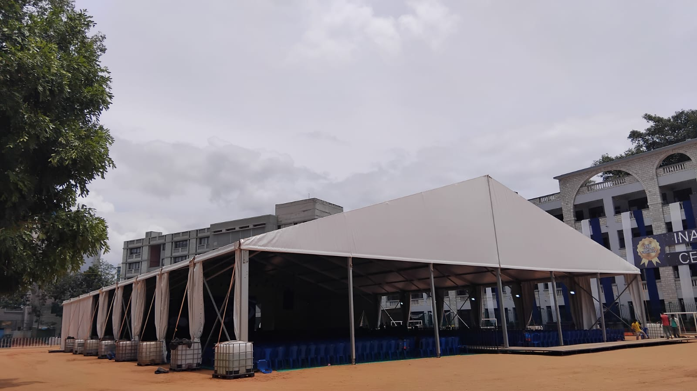
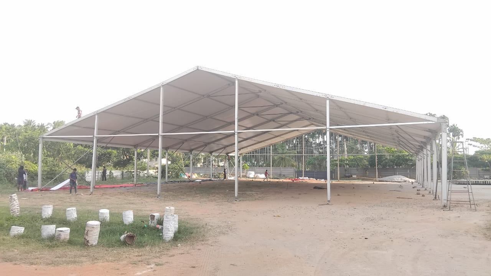
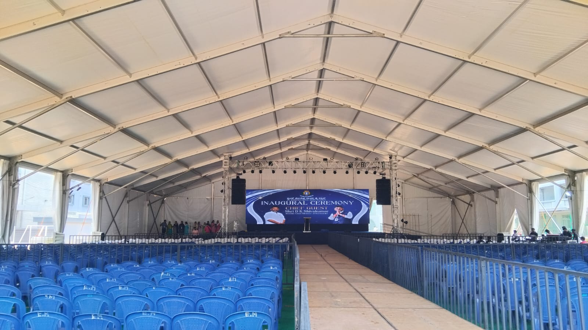
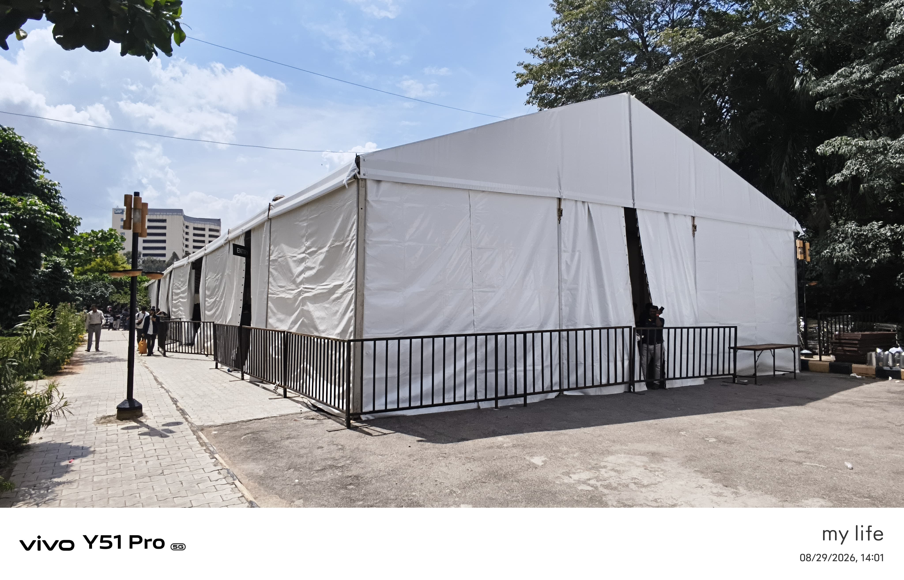
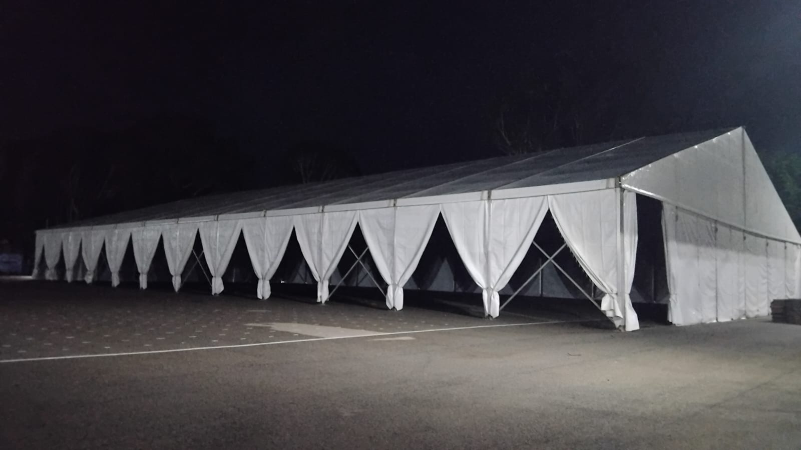
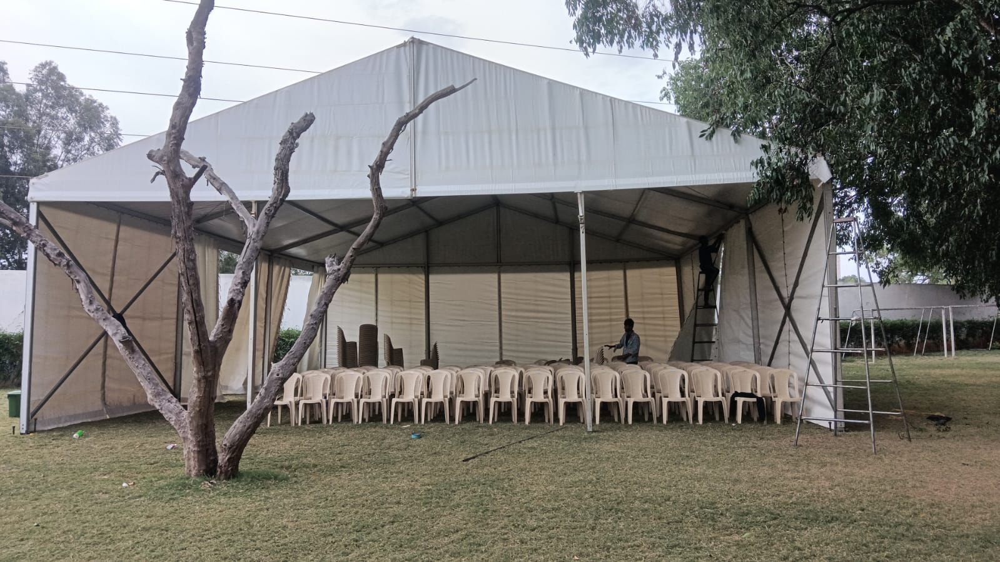
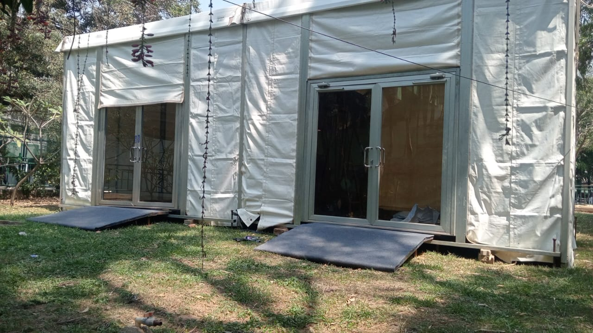
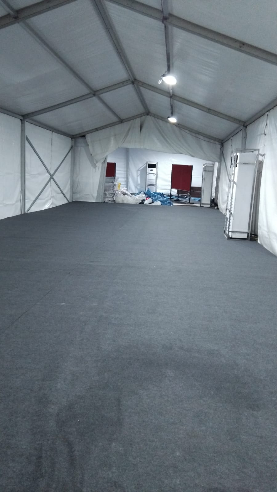

← Back to all services
01 / OUR SERVICES
German Tents
A covered setting with room for the whole occasion.
German tents create a flexible, weather-conscious space for large gatherings. These photographs show different exterior, interior, and installation views from company projects.

WHERE IT FITS
Made for the occasion.
- Conference and audience seating
- Wedding and reception layouts
- Covered event and dining areas
FROM OUR WORK / 08 PHOTOS
German Tents in focus.
Explore these company project photos. Select an image to open the full photograph.







LET'S PLAN YOUR SETUP
Tell us what you have in mind.
Share the date, venue, and size of your event. We can discuss a suitable setup and confirm availability in a quotation.